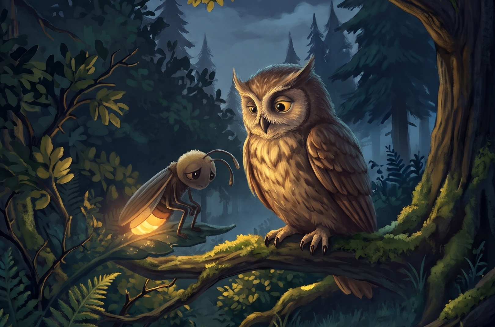

Cahaya Kecil di Lembah Gelap
Kategori: Cerita Inspiratif

Di sebuah hutan pinus yang rimbun, hiduplah seekor kunang-kunang muda bernama Lumi. Setiap senja tiba, Lumi dan kawan-kawannya terbang menari di antara semak belukar sambil menyalakan cahaya kuning lembut dari ekor mereka.
Namun, setiap kali mendongak ke langit, Lumi selalu merasa berkecil hati. Di atas sana, bulan purnama bersinar begitu terang hingga seluruh lembah bermandikan cahaya perak. Bintang-bintang pun berkelip megah tanpa henti.
“Buat apa aku menyalakan cahayaku?” keluh Lumi suatu malam kepada Pak Tua Bima, seekor burung hantu yang bertengger di dahan pohon ek. “Cahayaku hanya setitik kecil. Dibandingkan bulan, sinarku sama sekali tidak ada artinya.”
Pak Tua Bima menoleh dengan tenang. “Bulan memang menerangi langit dari jauh, Lumi. Tapi ia tidak bisa turun dan masuk ke sela-sela semak yang rimbun.”
Lumi tetap tidak yakin. Sejak malam itu, ia enggan terbang dan memilih bersembunyi di balik daun pakis, membiarkan cahayanya meredup.
Beberapa hari kemudian, badai besar datang. Awan hitam pekat menggulung langit malam, menutupi bulan dan bintang sepenuhnya. Hutan itu mendadak tenggelam dalam gelap gulita. Saat hujan mulai reda, terdengar suara tangisan pelan dari arah tebing berbatu.
Ternyata, seekor anak rusa terpisah dari induknya dan terjebak di jalur sempit yang dipenuhi akar pohon serta semak berduri. Pak Tua Bima bisa mendengar suaranya dari atas, tetapi lebatnya dedaunan menghalangi pandangannya untuk menuntun si anak rusa keluar dengan aman.

Mendengar kepanikan itu, Lumi teringat kata-kata Pak Tua Bima. Tanpa ragu, ia mengepakkan sayapnya dan menyalakan cahayanya seterang mungkin.
Lumi terbang rendah, menyusup ke celah semak belukar yang tidak mungkin dijangkau cahaya bulan. Titik cahaya hangat di ekornya menjadi satu-satunya penunjuk jalan di tengah pekatnya malam.
“Ikuti cahayaku, pelan-pelan saja,” ujar Lumi sambil terbang tepat di hadapan si anak rusa.
Langkah demi langkah, anak rusa itu mengikuti kelip cahaya Lumi, menghindari batu licin dan jurang kecil, hingga akhirnya berhasil kembali ke pelukan induknya dengan selamat. Seluruh penghuni hutan bersorak lega.
Malam itu, Lumi menatap langit yang masih tertutup awan dengan perasaan hangat. Ia akhirnya mengerti bahwa dirinya tidak perlu bersinar sebesar bulan untuk bisa bermanfaat. Cahayanya memang kecil, tetapi justru karena itulah ia mampu hadir di tempat-tempat sempit yang paling membutuhkan pertolongan.
Pesan moral: Jangan pernah meremehkan kemampuan kecil yang kamu miliki. Sekecil apa pun kontribusimu, ia tetap sangat berarti saat berada di waktu dan tempat yang tepat.